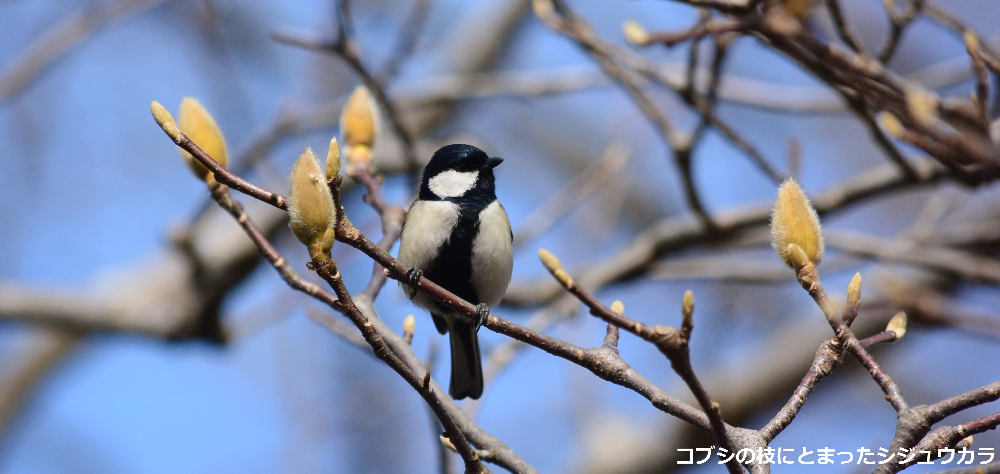

とりトレは、野鳥の鳴き声をクイズ形式でトレーニングしながら覚えるためのツールです。現在、26種の鳴き声を聞くことができます。 鳴き声音源の多くはNPO法人バードリサーチに提供していただきました。
トレーニングし甲斐のある種の出題頻度を高く設定されていて、トレーニングを続けていくと種の出題頻度が選べるようになります。
回答履歴が保存できることから、毎日の継続的なトレーニングが可能です。
詳しくはこちら【Information】
2023年9月6日 スマホで利用しやすいようデザインを修正しました。
2023年6月21日 ユーザー登録機能、鳥の鳴き声解説追加、到達度テストのランダム出題機能の追加、利用規約の更新 を行いました。
2023年3月1日 ウェブサイトをオープンしました。
【推奨ブラウザ等】
Google chromeを推奨していますが、Microsoft Edge、Mozilla Firefoxでも行うことができます。
OSはWindows、Mac OSを推奨しています。
【Profile】
国立研究開発法人国立環境研究所福島地域協働研究拠点/生物多様性領域
〒305-8506
茨城県つくば市小野川16-2
Email: